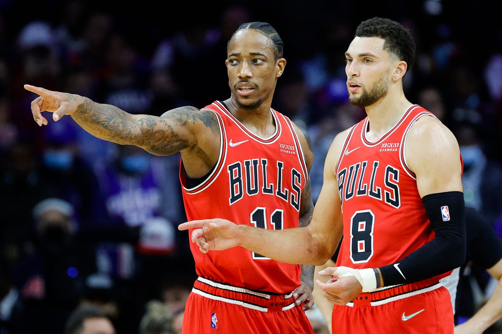

Chicago Bulls
Basketbol Tarihimiz
Chicago Bulls Chicago, Illinois'te bulunan NBA takımıdır. Doğu Konferansı'nın Merkez Grubu'nda oynamaktadır. Boğalar olarak da bilinen takım 26 Ocak 1966 tarihinde kurulmuştur. İç saha maçlarını etkileyici atmosferi nedeniyle tımarhane lakabını almış United Center salonunda oynamaktadır. Takım 1990'lı yıllarda 1991-98 arasında NBA'de three-peat olarak adlandırılan 3 kez art arda şampiyonluk başarısını 2 kez göstermiş ve bu dönemde toplam 6 kez şampiyon olma başarısı göstermiştir. O dönemki kadroda NBA'in gelmiş geçmiş en önemli oyuncusu Hall Of Fame Michael Jordan, Scottie Pippen ve koç olarak Phil Jackson bulunuyordu. Ayrıca takım NBA tarihinde 10 yıl içinde 2 kez thre-peat yapan ve 6 şampiyonluk birden kazanan tek takım unvanını taşımaktadır.
Bulls 1995-96 normal sezonunda 72 galibiyet ve 10 mağlubiyet alarak NBA tarihinde tek bir sezonda 70 ve üzeri galibiyet alan ilk takım olmalarının yanında bir sezonda en çok galibiyet alan takım rekorlarını kırmıştır. 1996 yılında kurdukları kadro birçok uzman ve analist tarafından NBA tarihinin en iyi kadrolarından birisi olarak kabul görmektedir. 2013 yılı itibarıyla Forbes dergisinin yaptığı bir açıklamaya göre Bulls takımının 52.200.000 $ milyon dolarlık gelirinin yanında 1 milyar dolarlık tahmini değeriyle NBA'nin şu an en değerli 3. kulübüdür. 5'i Michael Jordan'ın 1'i Derrick Rose'un olmak üzere takım oyuncuları toplam 6 kez NBA En Değerli Oyuncu Ödülü'nü kazanma başarısı gösterdiler.
Bulls takımının tarihi boyunca büyük rekabet ve çekişme içerisinde bulunduğu takımlar Milwaukee Bucks, Detroit Pistons son zamanlarda Indiana Pacers ve Miami Heat'tir. Çok büyük bir çekişme yaşadıkları Bulls / Pistons rekabeti ise 1980'lerin sonlarında ve 1990'lı yılların başlarında yaşanmıştır. Ayrıca bu çekişme NBA tarihinin en büyük rekabetlerinden birisi olarak kabul edilmektedir.
